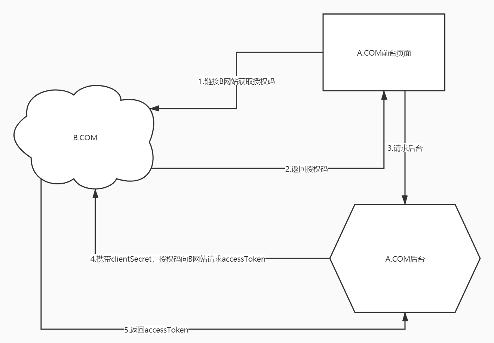

公司大牛层层剖析用户授权和认证，想把理解的知识整理记录一下
- 由于在公司做过通讯录服务，一直有个先入为主的概念，通讯录不就是用户吗！？大牛让我厘清了一个概念，通讯录和用户认证是两件事，通讯录是通讯录，能提供的功能譬如显示可见组织树和能看到哪些人；而用户认证只是需要用户名密码等一些与登录认证相关的属性（譬如角色权限等）即可；仔细想来确实是把模型给搞混在一起，它们确实不是一件事
首先带着问题来看，怎么样实现用户登陆才是安全的
- 默认前提是客户的电脑本身都是安全的，不会因为电脑本身被其他人占用而产生危险情况，譬如网页打开调试模式可以直接看到交互数据
- 假设会被第三方在网络传输中途截取数据
前置知识点，HTTP和HTTPS
- 首先HTTP是明文传输，肯定不安全
- HTTPS会对内容加密，没有私钥是无法解密，所以不考虑性能和成本网络间传输HTTPS是相对安全的
以前的用户认证模式
无论客户端CS程序或者BS网页程序调用HTTP或者HTTPS访问服务器实现用户登陆
- 用户名和密码加密，调用服务器端验证返回sessionID或者token
- HTTP用户名和密码都是明文传输，用脚想都知道不安全了,是不是?
- HTTPS是相对安全的，数据部分经过非对称加密，譬如被网络截包获取到的数据不会轻易被解密
适用场景
- 用户认证体系自己掌握，使用成本高，需要自己建一套用户系统，包括用户数据和接口
oauth2.0下的用户授权和认证模式（详细说明授权码模式，其他三种略）
什么是oauth
- OAuth 引入了一个授权层，用来分离两种不同的角色：客户端和资源所有者。资源所有者同意以后，资源服务器可以向客户端颁发令牌。客户端通过令牌，去请求数据。
- OAuth 的核心就是向第三方应用颁发令牌。
- 不管哪一种授权方式，第三方应用申请令牌之前，都必须先到系统备案，说明自己的身份，然后会拿到两个身份识别码：客户端 ID（client ID）和客户端密钥（client secret）。这是为了防止令牌被滥用，没有备案过的第三方应用，是不会拿到令牌的。
为什么要用oauth
- 不用自己建用户系统，绝大多数项目只需要把着眼点放在本项目内容，而不需要关注其他的，用户系统一般甲方早已存在，往往要求我们做对接，以他们的资源为准；这样做既方便了我们，减少了我们做用户系统的成本，而且甲方也不需要为了用你这个项目，而去维护两套用户体系
授权码（authorization-code）
- 指的是第三方应用先申请一个授权码，然后再用该码获取令牌。
- 这种方式是最常用的流程，安全性也最高，它适用于那些有后端的 Web 应用。授权码通过前端传送，令牌则是储存在后端，而且所有与资源服务器的通信都在后端完成。这样的前后端分离，可以避免令牌泄漏。
授权码模式的访问流程
- A 网站提供一个链接，用户点击后就会跳转到 B 网站，授权用户数据给 A 网站使用。下面就是 A 网站跳转 B 网站的一个示意链接。
重点1：A 网站提供的一定要是一个B 网站的用户认证网页，否则A 网站就是耍流氓，如果说用户认证网页是A网站提供的，用户把用户名密码在A网站进行输入，那么A网站就可以持有用户的私密数据了。
1
2
3
4
5https://b.com/oauth/authorize?
response_type=code&
client_id=CLIENT_ID&
redirect_uri=CALLBACK_URL&
scope=read- 用户跳转后，B 网站会要求用户登录，然后询问是否同意给予 A 网站授权。用户表示同意，这时 B 网站就会跳回redirect_uri参数指定的网址。跳转时，会传回一个授权码，就像下面这样。
1
https://a.com/callback?code=AUTHORIZATION_CODE
- 用户跳转后，B 网站会要求用户登录，然后询问是否同意给予 A 网站授权。用户表示同意，这时 B 网站就会跳回redirect_uri参数指定的网址。跳转时，会传回一个授权码，就像下面这样。
- A 网站拿到授权码以后，就可以在后端，向 B 网站请求令牌。
1 | https://b.com/oauth/token? |
- 上面 URL 中，client_id参数和client_secret参数用来让 B 确认 A 的身份（client_secret参数是保密的，因此只能在后端发请求），grant_type参数的值是AUTHORIZATION_CODE，表示采用的授权方式是授权码，code参数是上一步拿到的授权码，redirect_uri参数是令牌颁发后的回调网址。
- B 网站收到请求以后，就会颁发令牌。具体做法是向redirect_uri指定的网址，发送一段 JSON 数据。
1 | { |

这里大牛提出个问题，为什么要code
- 另一种授权模式密码式,其实本身是很不安全，因为这种模式下access token已经泄露给浏览器端了, 容易被黑客截获。
- OAuth Server会返回一个授权码给用户浏览器，code会经过浏览器，，并且让用户重定向到OAuth Client（浏览器后台）, 这时, 后台收到授权码，了解用户需要认证操作，就把授权码+Client id/Client secret一起发给OAuth Server获取access token。
之后OAuth Client就通过access token获得了用户的认证，不需要把token暴露给前端浏览器，保护了token.
隐藏式（implicit）
- 有些 Web 应用是纯前端应用，没有后端。这时就不能用上面的方式了，必须将令牌储存在前端。RFC 6749 就规定了第二种方式，允许直接向前端颁发令牌。这种方式没有授权码这个中间步骤，所以称为（授权码）”隐藏式”（implicit）。
密码式（password）：
- 如果你高度信任某个应用，RFC 6749 也允许用户把用户名和密码，直接告诉该应用。该应用就使用你的密码，申请令牌，这种方式称为”密码式”（password）。
- 这种方式其实就是以前通用的用户认证模式
客户端凭证（client credentials）
- 最后一种方式是凭证式（client credentials），适用于没有前端的命令行应用，即在命令行下请求令牌。